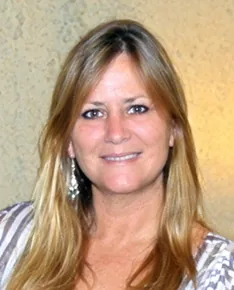

About CATS
CATS, Inc., offers the community an array of treatment options in a very comfortable atmosphere. We are located in a beautiful 1800’s Victorian historic home in the heart of Ocala, FL.
Mission and vision
CATS mission is to provide a safe environment, in which people can explore their past, break patterns, and develop healthy mindful living. We believe that a balanced and choice-filled life is attainable when individuals are given a safe, stimulating environment.
Please review our services section for full details.
Serving Central Florida
Started in 1989, CATS affords those that attend an enriching experience. We have a lengthy history of providing counseling to the citizens of Central Florida in an individualized manner. CATS Inc. is highly regarded by local physicians, professionals, businesses, and major industry. We have treated over 10,000 citizens since CATS opened its doors.

Sally Campbell,
Founder
Sally Campbell has dedicated her life to the care of those who suffer from the disease and lifestyle of addiction, as well as Adult Children of Alcoholics (ACOA) and co-dependency, and in 1984 began her quest to understand them. She pursued a degree in social work, and also attained credentials as a Certified Addiction Professional (CAP) and an International Alcohol and Drug Counselor (ICADC). Sally is also an SAP provider for the Department of Transportation.
These experiences have shaped Sally into the passionate and effective counselor she is today. She has gained cultural experience through extensive travel, and is currently working on three books related to her vast experience in the field of addictive disorders.
Sally has been a strong supporter and past board member of the Domestic Violence and Sexual Assault Center in Ocala, Florida. She has been instrumental in setting forth the Duluth Model standard, and she also ran a men’s Batterers Intervention Program, for many years.